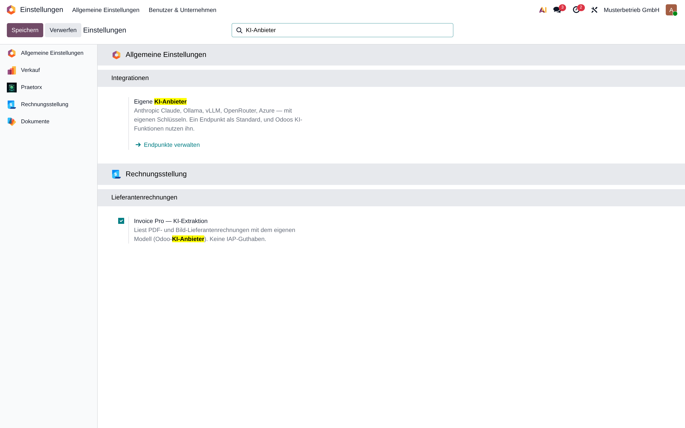
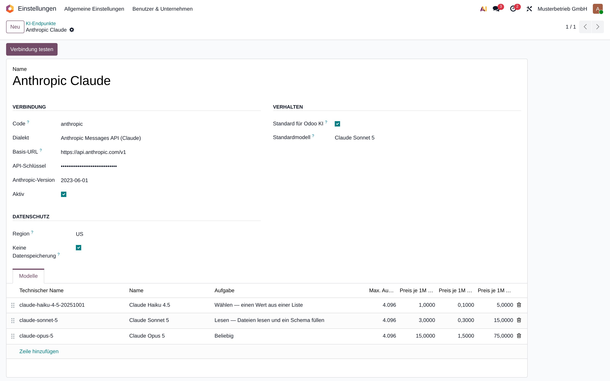
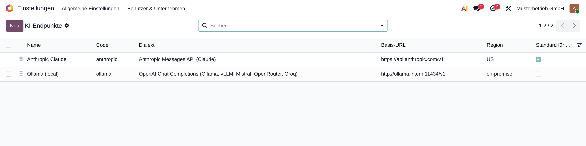
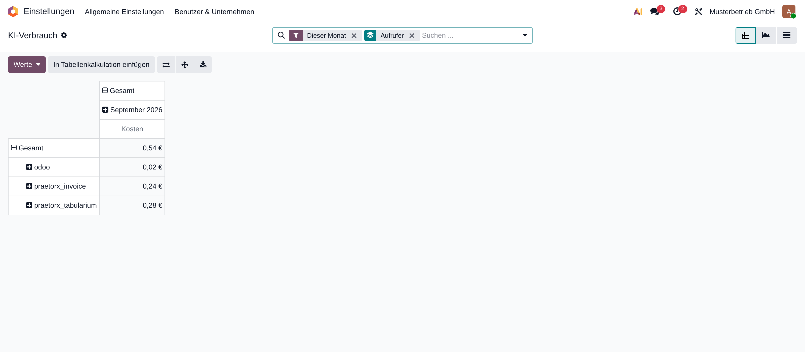

Bring your own LLM to Odoo's AI fields, agents and document auto-sort — Anthropic Claude, Ollama, vLLM, OpenRouter, Azure
Odoo 19 ships a capable AI layer that talks to exactly two providers. This module teaches that same layer additional providers — with your keys, your models, your region — and adds what Odoo does not track: usage per module and a monthly budget per company. Odoo's own code is not modified on disk.
Mark an endpoint as Default for Odoo AI and every request Odoo issues to its built-in OpenAI provider is served by that endpoint instead: AI fields in Studio, the AI-fields scheduled action, AI agents, the auto-sort of the Documents app. Nothing else to change, no prompt to rewrite. Remove the flag and Odoo is back on OpenAI.
Models are matched by name. When Odoo asks for a model your endpoint does not serve (its AI fields hard-code one), the endpoint's default model answers. You decide which model that is.
Claude Haiku, Sonnet and Opus natively: PDFs as document blocks, images, structured JSON, tool calling. Not through a compatibility shim.
Ollama, LM Studio, vLLM, Mistral, OpenRouter, Groq — including models in your own data centre with no key at all. PDFs become text through Odoo's own indexer.
Odoo's own path with your base URL and header style — Azure OpenAI, proxies, gateways.
Every request writes tokens, cost from your price table and the calling module. A pivot shows what Documents, agents or a third-party module spent this month.
A soft limit sends the administrator an activity; a hard limit refuses further requests until next month. The refused request is not counted.
Modules built on this layer ask for a capability — choose, read, embed — and Settings maps each to a model. The caller never sees a model name.




Odoo's AI service speaks the OpenAI Responses API. Most "OpenAI-compatible" servers do not, and Anthropic's OpenAI compatibility layer ignores both file input and JSON schemas. So this module speaks three dialects natively and picks the right one per endpoint:
| Dialect | For | Files | Structured output | Tools |
|---|---|---|---|---|
| OpenAI Responses | OpenAI, Azure OpenAI, proxies | PDF and images | JSON schema | native |
| OpenAI Chat Completions | Ollama, LM Studio, vLLM, Mistral, OpenRouter, Groq | images; PDFs as extracted text | JSON schema | native |
| Anthropic Messages | Claude | PDF and images | enforced tool call | native, results merged per turn |
The extension hooks Odoo's AI service in memory at startup. A database without configured endpoints behaves exactly as before. Google Gemini requests are never rerouted.
vector, as the AI app itself requires).Ask for a capability instead of a model, and tag your calls so they show up in the usage report:
service, model = env["ai.provider.endpoint"]._service_for("read") # or "choose", "embed"
answer = service.with_context(ai_caller="my_module").request_llm(model, [system], [user], files=..., schema=...)
Without a configured endpoint the call falls back to Odoo's own OpenAI path, so a module works with or without this one.
No. It extends the Enterprise AI app. Community has no AI layer to extend.
Neither. It adds providers to Odoo's own service and writes one usage line per request (tokens, cost, caller) — never the prompt or the answer.
For the conversation, yes. Anthropic offers no embeddings, so sources need an OpenAI-compatible endpoint with a 1536-dimension embedding model, configured on the endpoint.
Chat-Completions endpoints get PDFs as extracted text, so a pure scan arrives empty there. Use a Responses-API or Anthropic endpoint for scans, or an image file.
The request is refused with a clear message and not counted. Raise the limit in Settings or wait for next month. The soft limit only notifies.
The extension is written against Odoo 19 and touches one internal service. It is re-verified for every Odoo major; endpoints, models and usage are plain data and carry over.
Write to support@syntaxandsabotage.io.
Model per task: a model made for the task now wins over a general one; embeddings never go to a chat model.
Store tile and icon: the artwork of the previous AI provider layer (Foundation), carried over to its successor.
Store listing: screenshots from a demo company, transparent icon, listing guard tests.
Initial release. Three dialects, default endpoint for Odoo AI, usage lines with cost and caller, soft and hard monthly budget per company, model per task, endpoint templates for Anthropic, Ollama and OpenRouter.
LGPL-3. Free of charge. Support: support@syntaxandsabotage.io.
|
Made with ♥ by Syntax & Sabotage Anbieter: Lars Weiler · Impressum · support@syntaxandsabotage.io |